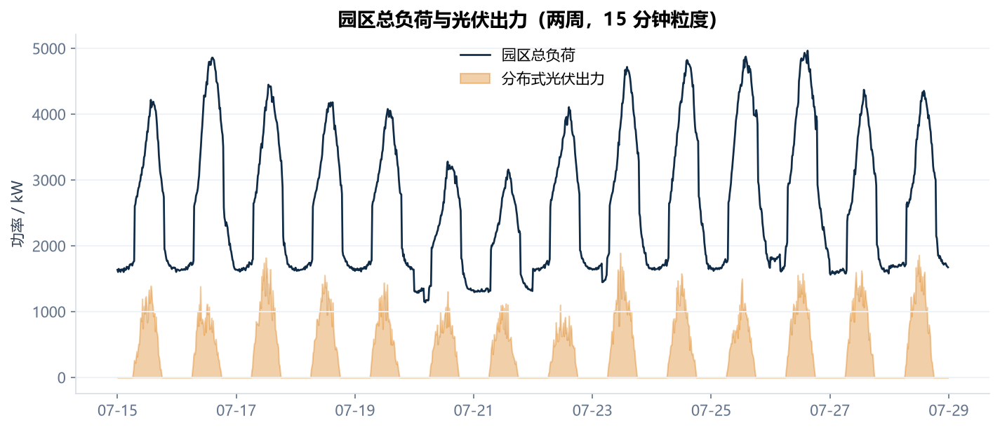
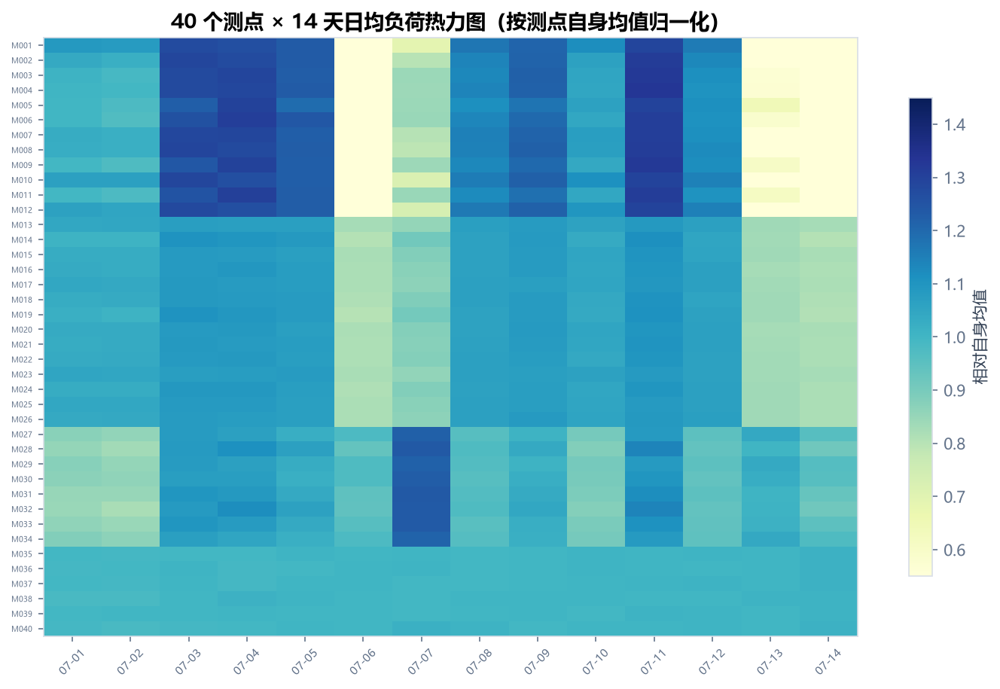
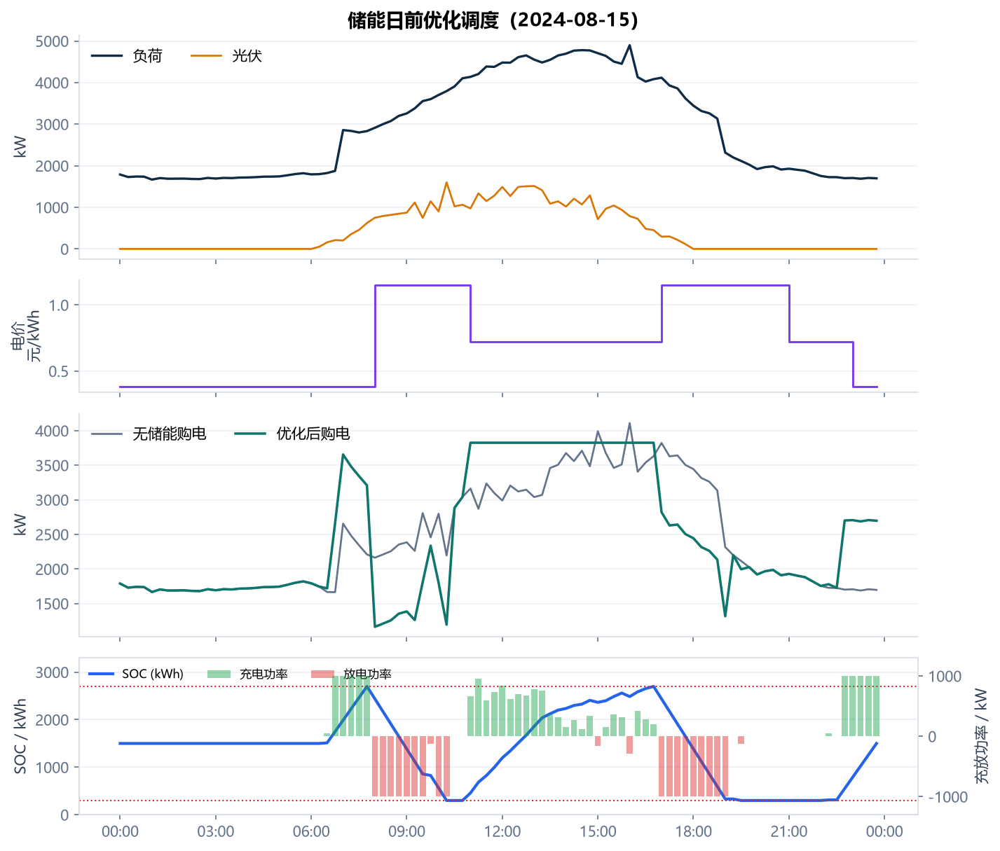
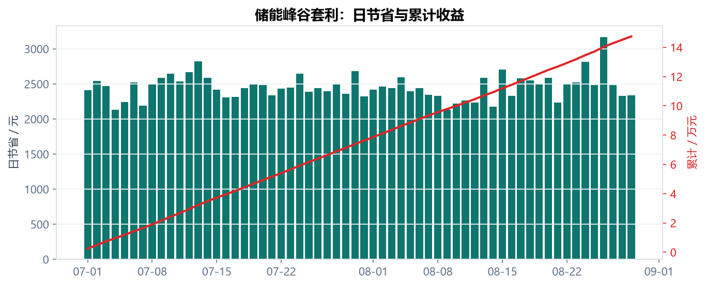

工业园区 EMS：数据治理 + 异常用能 + 储能调度
一个偏工业/政务场景的完整项目：40 个计量点、60 天、23 万行读数；先把脏数据治理干净，再识别五类异常，最后用线性规划做峰谷套利。它回答的是“算法怎么变成电费单上的数字”。
先读“园区为什么需要 EMS”把电费结构弄懂，再看“数据有多脏”，然后是异常识别与调度两条主线，最后看收益与局限。电费、需量、倍率这些词如果陌生，先读 专题 B1；调度模型看不懂，跳到 专题 B4。
项目背景：园区为什么需要 EMS
一个典型工业园区，有办公楼、生产车间、商业综合体和道路照明。电费不是简单的“用了多少度”，而是三块叠加：电度电费（峰平谷不同价）、需量电费（按当月最大需量收基本费）、力调电费（功率因数奖惩）。很多园区每个月多交的钱，不是用多了，而是峰值没管住、异常没发现。
能源经理关心什么
这个月电费为什么涨？哪栋楼、哪条产线异常？需量有没有超标？储能什么时候充放最划算？
运维关心什么
哪块表断了、哪台设备停了、哪个采集器卡死？告警是不是真的？该派给谁？
财务/管理层关心什么
今年能省多少？碳排有没有下降？改造投入多久回本？数据能不能审计？
第一段：数据治理——把 23 万行脏读数变成可信数据，并给出每个测点的质量分。第二段：异常识别——在日粒度上找窃电、倍率、故障、卡死、尖峰，输出可派单的告警。第三段：储能调度——基于治理后的园区总负荷与光伏，做 15 分钟粒度的线性规划，算清省了多少钱、碳怎么变。
数据：40 个测点长什么样
数据形态严格对齐真实用采/EMS 系统：长表（一个测点一个时间戳一行），而不是宽表。这样测点增减不影响表结构，也是时序数据库的常见存法。
| 用户类型 | 测点数 | 容量范围 | 典型曲线特征 |
|---|---|---|---|
| 办公楼 office | 12 | 120~260 kW | 10:30 与 15:00 双峰，周末降到 35% |
| 生产车间 factory | 14 | 280~680 kW | 7:00~19:00 高位平台，周末 78%，三班倒特征弱 |
| 商业综合体 mall | 8 | 180~380 kW | 14:30 单峰，周末反而升到 115% |
| 道路照明 streetlight | 6 | 18~45 kW | 19:00~次日 05:48 全亮，白天接近 0 |
四张表，各司其职
| 文件 | 规模 | 内容 |
|---|---|---|
meter_readings_raw.csv | 230,600 行 | 测点 ID、时间戳、有功功率 kW、温度。含重复、缺失、负值、零值 |
meter_meta.csv | 40 行 | 测点档案：名称、类型、容量、CT/PT 变比（电流/电压互感器的换算倍率）、安装日期 |
park_pv_15min.csv | 5,760 行 | 园区 2 MW 分布式光伏出力、温度、云量 |
anomaly_labels.csv | 33 条事件 | 注入异常的真值（仅用于评估，模型不可见） |
真实项目里没有。这里注入异常并记录标签，唯一目的是量化评估——不然你无法知道召回率是多少。上线后标签来自人工稽核与工单结论。这个区别要说清楚，否则会被认为“拿测试集调参”。项目里阈值只用前 24 天校准，评估从第 30 天开始，中间留缓冲。


第一段：数据治理
原始 230,600 行里，注入了五类质量问题。治理流程是：去重 → 重建连续时间索引 → 负值/零值置空 → 短缺口插值 → 长缺口保留为空 → 输出质量报表。
| 问题 | 数量 | 处理方式 | 为什么 |
|---|---|---|---|
| 重复记录 | 200 行 | 按 (meter_id, ts) 去重，保留首条 | 采集重发，重复计入会虚增电量 |
| 负值 | 40 个 | 置为缺失 | 有功功率为负，对这类用户物理上不合理 |
| 零值 | 60 个 | 置为缺失 | 办公楼/工厂不可能完全归零，属于采集异常 |
| 随机缺失 | 约 0.6% | ≤2 小时线性插值 | 短缺口插值可信；长缺口插值会“编数据” |
| 连续 6 小时断采 | 3 个测点 × 3 段 | 保留为空，体现在质量分 | 超过 2 小时不插值，避免掩盖采集故障 |
治理后：行数 230,400（40 × 60 × 96），原始缺失率 0.68%，补齐后 0.03%。注意“补齐后缺失率”不是越低越好——如果强行把 6 小时断采也插值填满，指标会很好看，但质量分就失去意义了。
质量报表：一个测点一个分数
quality = q.groupby("meter_id").agg( missing_rate=("p_kw", lambda s: float(s.isna().mean())), capacity_kw=("capacity_kw", "first"), meter_type=("meter_type", "first"), ).reset_index() quality["score"] = (100 * (1 - quality["missing_rate"])).round(1)

本项目的窃电、倍率、故障都不是“缺失”，所以质量分依然接近 100——它们是业务异常，不是数据缺失。把两者混在一个分数里，会让能源经理误以为“数据没问题”。正确做法是质量分只描述数据可信度，业务异常单独出报告。
第二段：异常用能识别
完整方法（同业基线、规则、孤立森林、阈值校准）在第 5 章已经讲透，这里只给项目结果和工程视角的补充。
| 异常类型 | 标注 | 命中 | 召回 | 处理班组 |
|---|---|---|---|---|
| 传感器卡死 | 6 | 6 | 100% | 采集运维 |
| 倍率配置错误 | 33 | 33 | 100% | 计量 / 结算 |
| 疑似窃电 | 50 | 50 | 100% | 用电稽核 |
| 设备故障 | 32 | 32 | 100% | 设备检修 |
| 异常尖峰 | 15 | 11 | 73.3% | 计量 / 采集 |
注入规模：窃电 5 台 × 12 天、倍率错误 3 台 × 15 天、设备故障 4 台 × 8 天、传感器卡死 6 台 × 8 小时、异常尖峰 5 台共 15 次。上表的“标注”是落在评估窗口内的测点日，所以小于注入总量；同一测点同一天叠加两类异常时会被计两次。
评估窗口 2024-07-31 ~ 08-29，1200 个测点日，112 个正例。精确率 0.947、召回 0.964、F1 0.956。告警率 9.5%，折合每天约 4 条（114 条 / 30 天），运维能接住；扩到 4000 个测点就必须做合并与压缩。
M005 在 7 月底到 8 月初被注入窃电和故障，导致它过去 14 天的“最大负荷基线”被压低。8 月 13 日恢复正常后，模型把“恢复”误判为 ×3 尖峰，连续误报 4 天。修法是：基线只统计未被判为异常的历史日，并对同一测点的连续告警做合并。这类问题不跑起来根本发现不了，也是项目里最有价值的细节。
第三段：储能调度，把算法变成钱
园区配了一套典型工商业储能：3,000 kWh / 1,000 kW，效率 0.95，SOC 允许 10%~90%，每天开始和结束都回到 50%。电价按峰平谷三档，另有需量电费。
| 参数 | 取值 | 说明 |
|---|---|---|
| 容量 / 功率 | 3,000 kWh / 1,000 kW | 约 2 小时充满或放完 |
| 效率 | 0.95 | 充放电各算一次，往返约 0.9 |
| SOC 范围 | 10% ~ 90% | 防止过充过放，首末均为 50% |
| 峰段电价 | 1.15 元/kWh | 08:00-11:00、17:00-21:00 |
| 平段电价 | 0.72 元/kWh | 11:00-17:00、21:00-23:00 |
| 谷段电价 | 0.38 元/kWh | 23:00-次日 08:00 |
| 需量电价 | 1.2 元/kW·日 | 约合 36 元/kW·月 |
线性规划模型
决策变量是每个 15 分钟时段的充电功率、放电功率、SOC、购电功率、弃光功率，以及全天峰值。目标是最小化电度电费 + 需量电费。
# 目标：min Σ price_t × grid_t × Δt + demand_price × peak # 1) 功率平衡：购电 - 弃光 - 充电 + 放电 = 负荷 - 光伏 grid[t] - curt[t] - ch[t] + dis[t] = load[t] - pv[t] # 2) SOC 递推：充电乘效率，放电除效率 soc[t] = soc[t-1] + eta × Δt × ch[t] - Δt / eta × dis[t] # 3) 首末 SOC 一致，保证可日复一日运行 soc[95] = soc_init # 4) 需量约束：任何时刻购电都不超过全天峰值 grid[t] <= peak # 5) 边界：0 ≤ ch, dis ≤ 1000 kW；0.1E ≤ soc ≤ 0.9E；curt ≤ pv
求解器用 scipy.linprog 的 HiGHS，每天 96 个时段、约 481 个变量，单日求解在毫秒级。60 天逐日求解，每天首末 SOC 都是 50%，因此结果可以直接串起来跑。

60 天结果
| 指标 | 优化前 | 优化后 | 变化 |
|---|---|---|---|
| 电度电费（元） | 2,674,763 | 2,533,563 | −141,200 |
| 需量电费（元） | 280,456 | 274,181 | −6,275 |
| 合计电费（元） | 2,955,219 | 2,807,744 | −147,475（−4.99%） |
| 购电量（kWh） | — | +29,724 | 增加 |
| 碳排放（tCO₂） | — | +16.95 | 增加 |
| 平均削峰（kW） | — | 87.1 | 下降 |

因为储能往返效率约 0.9：为了在峰段放出 1 kWh，谷段要充进约 1.11 kWh。套利赚的是价差，不是电量。本项目碳排因子用的是固定值 0.5703 kgCO₂/kWh，购电量增加 → 碳排增加。真实电网里谷段可能有更多清洁能源，碳排未必上升，但用固定因子算就是上升。这个“反直觉”点如果不主动说，面试官一问就会显得你没算清楚。
它到底在优化什么
套利：低买高卖
谷段 0.38 元充电，峰段 1.15 元放电，价差 0.77 元/kWh。考虑 0.9 的往返效率，放出 1 kWh 需先充约 1.11 kWh，净收益约 1.15 − 1.11 × 0.38 ≈ 0.73 元/kWh（按放电量计）。
削峰：降低需量
约束 grid ≤ peak，让购电曲线尽量平。需量每降 1 kW，一个月省 36 元；60 天平均削峰 87.1 kW，对应约 0.6 万元需量节省。
消纳光伏：减少弃光
中午光伏富余时充电，减少弃光；但本项目 FEED_IN=0 且允许弃光，所以这部分收益有限，主要靠套利。
业务闭环：算法输出怎么被使用
日报：给能源经理
昨日用电量、峰谷占比、需量是否超标、异常告警条数、储能收益。用一页 PDF 或看板，不需要看代码。
工单：给运维
每条告警带测点、日期、原因、严重度、建议动作。状态可流转：待核查 → 已确认 → 误报 / 已处理。
月报：给财务
电费同比环比、储能收益、异常追回金额、碳排变化。数字要能对上账单，不能只有模型指标。
策略：给调度
次日充放电计划、需量目标、光伏消纳建议。计划要能被人工覆盖，并记录覆盖原因，用于后续优化。
想把调度模型吃透，读 专题 B4 · 优化调度与需求响应；想补电价与计量口径，读 专题 B1。
拷问清单：10 个必须能答的问题
Q1：F1 0.956 是不是太高了？
Q2：4 个漏报为什么修不了？
spike_score 约等于 1。修法是把尖峰检测从日最大值改成逐点相对邻域突增，但这会增加计算量和误报，需要重新校准。我在报告里把它列为已知局限，而不是假装没有。”Q3：6 个误报里 4 个来自同一个测点，说明什么？
Q4：为什么储能省了钱，碳排反而增加？
Q5：线性规划是全局最优吗？和规则策略比呢？
Q6：如果预测错了，调度方案还可信吗？
Q7：为什么需量约束用 grid ≤ peak，而不是直接限制 800 kW？
Q8：40 个测点、60 天，数据量够吗？
Q9：质量分只有完整性，会不会太草率？
Q10：这套东西上线，最难的是什么？
复现清单
- 安装 pandas、numpy、scikit-learn、scipy。
- 运行
generate_data.py，确认 230,600 行、40 个测点、33 条异常事件。 - 运行
detect.py，确认清洗后 230,400 行、F1 0.956、告警 114 条。 - 打开
artifacts/quality_report.csv，核对质量分与缺失率。 - 打开
artifacts/anomaly_alerts.csv，挑 3 条告警看原因是否可解释。 - 运行
dispatch.py，确认 60 天、节省 147,475 元、节省率 4.99%。 - 打开
artifacts/dispatch_profile_sample.csv，核对 2024-08-15 的充放电与 SOC。 - 用本文的图逐张讲一遍，确保每个数字都能对上文件。